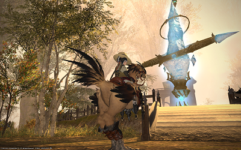

- 1.0 Initial Release
- 1.1 Mini Update
- Added Planned / ChangeLog
- Small CSS updates
- 1.2 Building On What we learned
- Removed Sorting from Slot Column
- Split ChangeLog and Planned Features Pages
- Added Navigation Bar
- General Code Cleanup
- Set-up Place-holder Pages for next release
- 1.3 Next Steps
- Organized CSS File to be easier to edit and navigate
- Added Comments to JS and CSS Files
- Began Implimenting Changes needed for Big Fishing
- 1.5 A Fishing we will go!
- Built out Fishing Table
- Added all functionality to fishing table
- 2.0 What the Hell Happened!!
- Feedback Survey
- Switched to JSON for Data handling
- Chenged to sliders for Min/Bot
- Fixed Many Gremlins
- Cleaned Up Code
- Hiding and showing a Node type no longer resets the stupid filters
- ... Mostly
- Better TableSorting
- TOOLTIPS!!!!
- On Hover Event on table to make reading across tables better.
- Removed Planned...Still Have alot of stuff Planned Just trying to trim Site

Version 2.0 - April 20, 2015